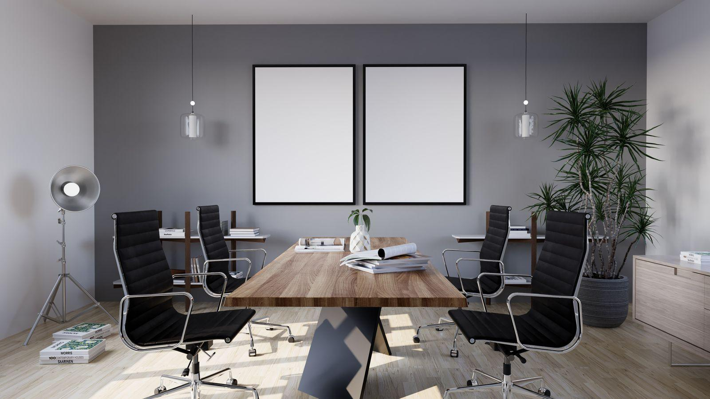
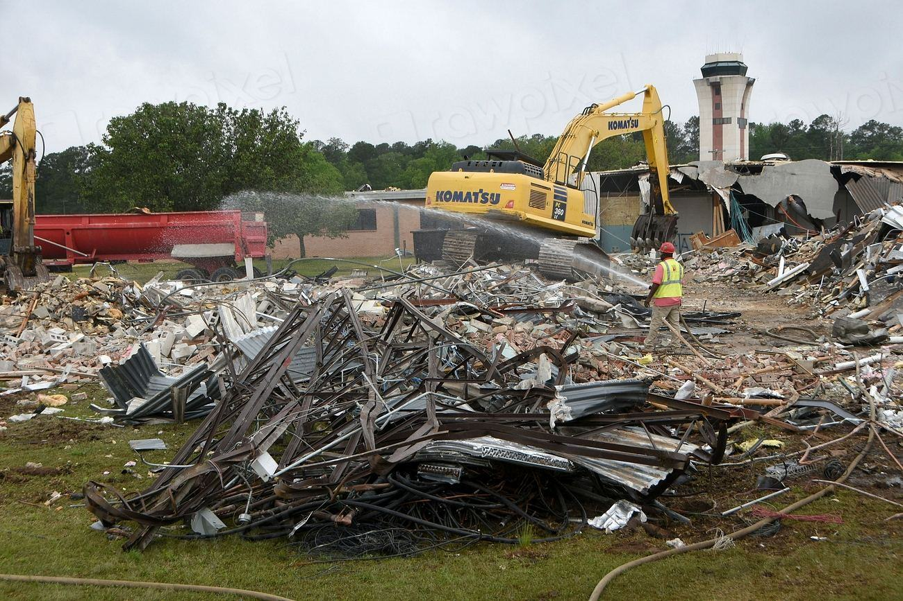

Illustrationsbild
Uppdragsgivare
Har låtit oss rädda materialet
- Brf Linnéstaden Övre
- Fastighets AB Kvillebäcken
- Lindholmen Kontorshus
- Mölndals Skolfastigheter
- Kungälvs Hyresbostäder
- Hisingsbyggen Arkitekter
- Majorna Byggnadsvård
Trapphuset i Linnéstaden
Ekparketten från fem våningsplan lades om i en förskola i Kvillebäcken – 340 kvadratmeter.
Ett kontor blev tre
Glasväggarna från ett kontorsplan på Lindholmen sitter nu i tre olika företags lokaler.
Lagret utökar
Vi har tagit över grannhallen på Ringön och har nu 1 800 kvadratmeter yta.

”En dörr från 1934 har redan klarat nittio år. Det enda den behöver är någon som skruvar loss den i stället för att slå sönder den.”

Lediga jobb
Bli rivare som sparar i stället för att slå sönder
Vi söker folk med bakgrund som snickare, rivare eller lagerarbetare som vill lära sig återbruk. Utbildning ingår och du får jobba i hela Storgöteborg.
Varje fredag går vi igenom veckans fynd på lagret – den bästa dörren får ett namn.
- 3lediga tjänster just nu
- 1ort: Göteborg
| Projekt | Ort | Typ | År | Status | Läs mer |
|---|---|---|---|---|---|
 Brf Linnéstaden Övre Brf Linnéstaden Övre | Göteborg | Selektiv rivning av trapphus | 2026 | Pågående | |
 Lindholmen Kontorshus, plan 4 | Göteborg | Kontorsstrip-out | 2025 | Utfört | |
 Gamla slöjdsalen | Mölndal | Rivning av skolbyggnad | 2025 | Utfört | |
 Villa på Särövägen Villa på Särövägen | Kungsbacka | Selektiv rivning och sanering | 2024 | Utfört | |
 Kungälvs Hyresbostäder Kungälvs Hyresbostäder | Kungälv | Återbruksinventering | 2024 | Utfört | |
 Kvarnbyns industrihall Kvarnbyns industrihall | Mölndal | Selektiv rivning | 2026 | Pågående |